수능(국어영역) (2013-10-08 기출문제)
1. 위 발표에 대한 평가 과정에서 제기한 질문으로 적절하지 않은 것은?(1번 공통지문 문제)
- 식용 버섯과 독버섯을 일반인이 쉽게 구별할 수 없는 이유를 제시했다면 청중들에게 도움이 되지 않을까요?
- 독버섯을 먹으면 어떤 위험한 증상이 나타나는지 알렸다면 청중들의 경각심을 더 높일 수 있지 않을까요?
- 전체 내용과 연관성이 떨어지니 ‘야생 동물’과 관련된 이야기는 제시하지 않는 것이 좋지 않았을까요?
- 어떤 책에서 본 내용인지 그 출처를 밝혔다면 발표 내용의 신뢰성을 더 높일 수 있지 않을까요?
- 독버섯과 식용 버섯의 사진을 시각 자료로 제시했다면 청중들의 이해도를 더 높일 수 있지 않았을까요?
(정답률: 알수없음)

2. ㉠~ ㉤을 통해 알 수 있는 ‘구두 언어’의 특성으로 적절하지 않은 것은?
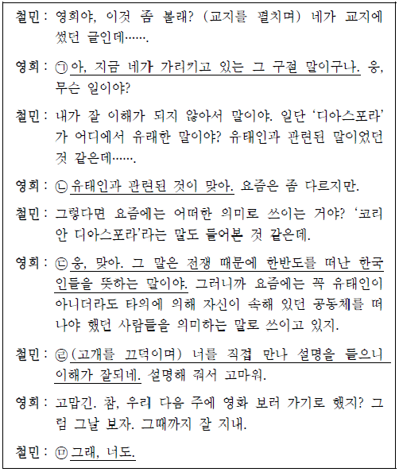
- ㉠: 대화 상대방과 시간적, 공간적 상황을 공유하고 있음을 알 수 있다.
- ㉡ : 대화 상대방의 말을 받아 더 상세하게 표현할 수 있다.
- ㉢ : 대화 상대방과 즉각적으로 상호 작용을 할 수 있다.
- ㉣: 비언어적 표현을 활용하여 화자의 의사를 효과적으로 전달할 수 있다.
- ㉤ : 대화의 맥락을 통해 알 수 있는 정보나 문장 성분을 생략할 수 있다.
(정답률: 알수없음)
3. [A]를 참고할 때, ‘민수’가 ‘은선’에게 했어야 할 말로 가장 적절한 것은? [3점](4번 공통지문 문제)
- 은선아, 아프면 누구나 시험공부를 열심히 할 수가 없어. 시험 성적이 좋지 않다고 너무 자책하지 마.
- 은선아, 아파도 열심히 공부했는데 시험 성적이 좋지 않아 속상하겠다. 몸이 회복되면 다음 시험은 분명히 잘 볼 수 있을 거야.
- 은선아, 요즘 너를 보면 체력이 많이 달리는 것 같은데 점심시간마다 운동을 하면 어때? 나도 요즘 운동을 열심히 하고 있거든.
- 은선아, 속상하지? 그래도 너는 늘 나보다 시험을 잘 보잖아. 아마 이번에도 나보다 성적이 더 좋을 거야. 그러니까 나를 생각해서라도 우울해 하지 않았으면 해.
- 은선아, 아파서 시험 준비를 제대로 못해 많이 우울하겠다.
(정답률: 알수없음)
4. 다음은 재환이가 동아리 홈페이지에 게시한 글과 동아리 구성원의 댓글이다. 재환이의 글에 비추어 볼 때, 댓글의 내용으로 적절하지 않은 것은?
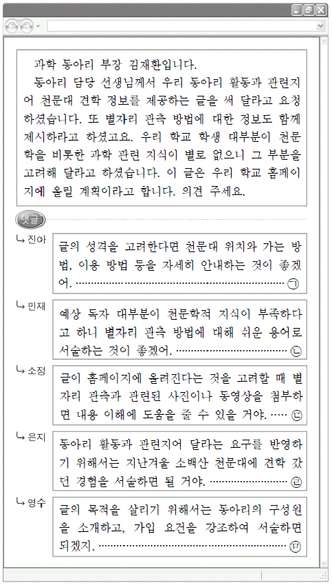
- ㉠
- ㉡
- ㉢
- ㉣
- ㉤
(정답률: 알수없음)
5. ㉠ ~ ㉤에 대한 수정 방안으로 적절하지 않은 것은?(7번 공통지문 문제)
- ㉠: 문맥을 고려하여 뒷문장과 순서를 바꾸는 것이 좋겠어.
- ㉡: 문장 성분 간의 호응을 고려하여 ‘만들어야’로 고치는 것이 좋겠어.
- ㉢: 글의 통일성을 고려하여 삭제하는 것이 좋겠어.
- ㉣: 맞춤법을 고려하여 ‘맞닥뜨릴’로 수정하는 것이 좋겠어.
- ㉤: 문장의 연결 관계를 고려하여 ‘또한’으로 바꾸는 것이 좋겠어.
(정답률: 알수없음)
6. 글쓰기 윤리를 준수하도록 권고하기 위해 <조건>에 따라 홍보 문구를 작성하였다. 가장 적절한 것은?(9번 공통지문 문제)
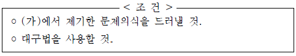
- 알고 해도 도둑질이고 모르고 해도 도둑질입니다. 당신과 사회를 좀먹는 표절, 이제 당신의 마음에서 추방하세요.
- 하루빨리 도입하세요. 표절 검사 시스템으로 우리 모두의 양심이, 우리 사회의 정의가 지켜집니다.
- 표절, 후회할 땐 너무 늦습니다. 표절, 따옴표 하나로 바로잡을 수 있습니다.
- 몰랐다고 해도 피할 수 없어요. 꼼꼼히 살펴보고 하나도 놓치지 마세요.
- 아무도 모르겠지? 당신의 양심도 모르고 있습니까?
(정답률: 알수없음)
7. <보기>를 참고하여 철수에게 해 줄 수 있는 조언으로 가장 적절한 것은?
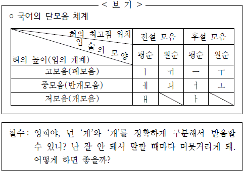
- ‘개’를 발음할 때는 ‘게’와 달리 입술을 동그랗게 오므려야 해.
- ‘개’를 발음할 때는 ‘게’에 비해 입을 더 크게 벌려서 혀의 높이를 낮추어야 해.
- ‘게’를 발음할 때는 ‘개’와 달리 소리 내는 동안 입술과 혀를 움직이지 말아야 해.
- ‘개’를 발음할 때는 ‘게’에 비해 입술을 더 평평하게 하고 입을 조금만 벌려야 해.
- ‘게’를 발음할 때는 ‘개’와 달리 혀의 최고점이 앞쪽에 있다는 느낌으로 발음해야 해.
(정답률: 알수없음)
8. <보기>는 단어의 의미 관계에 관한 수업 자료의 일부이다. <보기>에서 이끌어 낼 수 있는 내용으로 적절하지 않은 것은? [3점]
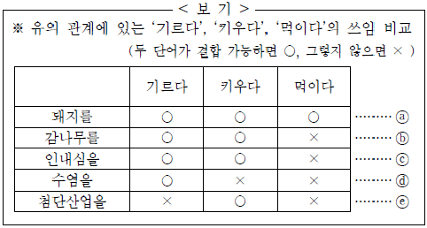
- ⓐ의 경우 ‘기르다’, ‘키우다’, ‘먹이다’는 모두 ‘사육하다’를 대신해 쓸 수 있다.
- ⓑ의 경우 ‘기르다’와 ‘키우다’는 ‘재배하다’를 대신해 쓸 수 있다.
- ⓒ와 ⓔ를 보면 ‘키우다’는 ‘기르다’, ‘먹이다’와 달리 추상적인 의미를 지닌 말과 결합하여 쓸 수 있다.
- ⓓ의 경우 ‘기르다’는 ‘깎다’와 반의 관계에 있다고 할 수 있다.
- ⓐ ~ ⓔ를 보면 ‘기르다’는 ‘먹이다’에 비해 ‘키우다’와 더 많은 상황에서 서로 바꾸어 쓸 수 있다.
(정답률: 10%)
9. <보기>의 ‘뜨개질’과 단어의 구조가 동일한 것은?
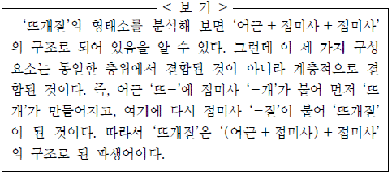
- 싸움꾼
- 군것질
- 놀이터
- 병마개
- 미닫이
(정답률: 0%)
10. <보기>를 바탕으로 ‘주어’에 대해 탐구한 내용으로 적절하지 않은 것은?
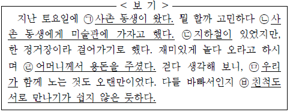
- ㉠, ㉣, ㉥을 보니, 주어는 ‘무엇이 어찌한다/ 어떠하다’에서 ‘무엇이’에 해당하는군.
- ㉠과 ㉣을 비교해 보니, 서술어의 자릿수에 따라 주격 조사의 형태가 달라지는군.
- ㉡을 보니, 문맥상 주어를 분명히 알 수 있을 경우에는 주어가 생략되기도 하는군.
- ㉢과 ㉤을 비교해 보니, 자음 뒤에서는 ‘이’, 모음 뒤에서는 ‘가’가 주격 조사로 쓰이는군.
- ㉥을 보니, 체언뿐 아니라 명사절도 주어가 될 수 있군.
(정답률: 알수없음)
11. <보기>의 ㉠~ ㉤에 대한 설명으로 옳지 않은 것은?
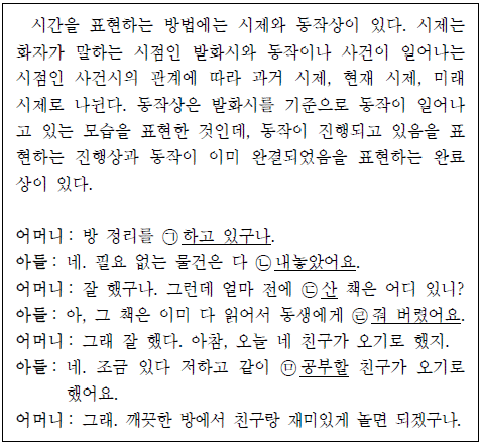
- ㉠: ‘-고 있구나’는 동작이 진행되고 있음을 나타내고 있다.
- ㉡: ‘-았-’은 사건시가 발화시에 앞선다는 것을 나타내고 있다.
- ㉢: ‘-ㄴ’은 발화시가 사건시에 앞선다는 것을 나타내고 있다.
- ㉣: ‘-어 버렸어요’는 동작이 이미 완결되었음을 나타내고 있다.
- ㉤: ‘-ㄹ’은 발화시가 사건시에 앞선다는 것을 나타내고 있다.
(정답률: 20%)
12. <보기>를 활용해 레비나스의 견해를 설명한 내용으로 적절하지 않은 것은?(16번 공통지문 문제)
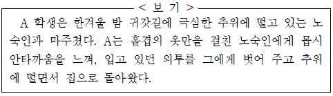
- 노숙인이 느낀 추위 자체는 ‘부정적이며 고독한 경험’이다.
- A는 도덕적 호소로 다가오는 ‘타인의 얼굴’에 직면한 것이다.
- A는 ‘외부의 폭력’에 노출되어 ‘흔들리고 영향을 받은’ 것이다.
- A가 입고 있던 외투는 A가 ‘즐기고 누리던’ 대상이다.
- A는 노숙인의 고통이 일깨우는 윤리적 의무를 기꺼이 받아들여 그를 ‘환대’한 것이다.
(정답률: 0%)
13. 윗글과 <보기>를 관련지어 이해한 내용으로 적절하지 않은 것은? [3점](18번 공통지문 문제)
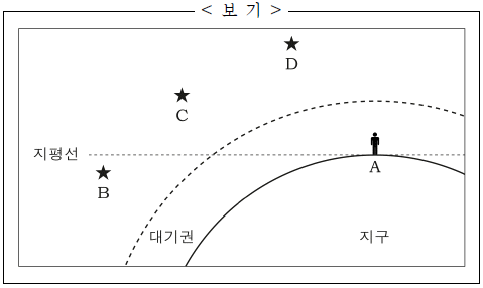
- 관측자 A가 대기권을 벗어난다면 지구에서보다 정확하게 별 C나 별 D의 방향을 인지할 수 있겠군.
- 별 B가 지평선 아래로 0.6°를 더 내려가더라도 관측자 A에게 보이겠군.
- 대기가 불안정할수록 별 C와 별 D는 더 반짝이는 것으로 보이겠군.
- 별 C보다 별 D가 실제 방향에 더 가깝게 보이겠군.
- 대기의 밀도가 더 커진다면 별 C와 별 D는 더 높은 고도에 있는 것으로 보이겠군.
(정답률: 알수없음)
14. ㉠의 이유로 가장 적절한 것은?(18번 공통지문 문제)
- 지구 표면에 가까울수록 지구 대기의 밀도는 커지기 때문에
- 지구 표면에서 멀어질수록 지구 대기가 안정되기 때문에
- 지구 표면에 가까울수록 지구 대기의 밀도가 작아지기 때문에
- 지구 표면의 대기 밀도가 작기 때문에
- 지구 대기의 밀도가 변함없기 때문에
(정답률: 10%)
15. 다음 자료를 통해 알 수 있는 학생의 독서 과정에 대한 설명으로 적절하지 않은 것은? [3점]
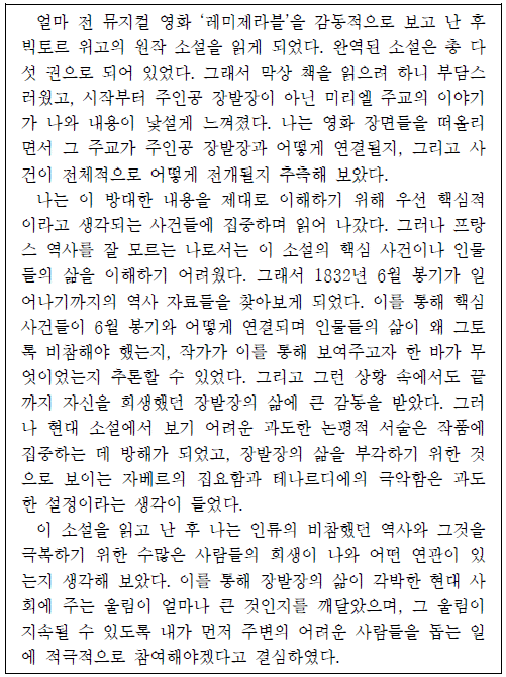
- 배경 지식을 활용하여 책의 내용을 추측하였다.
- 다른 책의 내용과 비교하여, 읽고 있는 책의 장단점을 파악하며 읽었다.
- 관련 자료를 참고하여, 책의 내용을 이해하고 집필 의도를 추론하며 읽었다.
- 서술 방식이나 인물 설정의 적합성에 대해 비판적으로 평가하며 읽었다.
- 책의 내용을 내면화하면서 새로 얻게 된 깨달음의 실천 방안을 생각하였다.
(정답률: 0%)
16. 문맥상 ⓐ~ ⓔ를 바꿔 쓰기에 적절하지 않은 것은?(22번 공통지문 문제)
- ⓐ : 수록(收錄)되어
- ⓑ: 결합(結合)되어
- ⓒ : 몰입(沒入)하게
- ⓓ: 첨가(添加)되게
- ⓔ : 파악(把握)하기
(정답률: 20%)
17. ㉠과 ㉡에 대한 설명으로 적절한 것은?(22번 공통지문 문제)
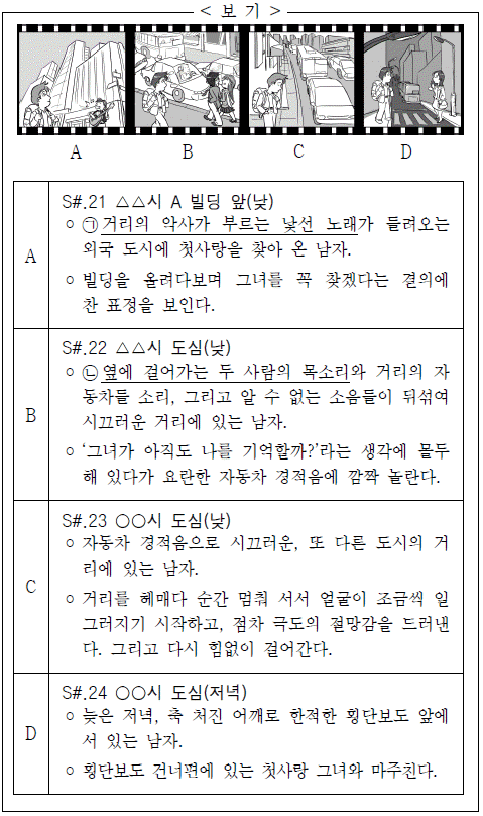
- ㉠과 ㉡은 모두 내재 음향이면서 비동시 음향이다.
- ㉠과 ㉡은 모두 외재 음향이면서 비동시 음향이다.
- ㉠과 ㉡은 모두 내재 음향이면서 동시 음향이다.
- ㉠은 동시 음향이고, ㉡은 비동시 음향이다.
- ㉠은 외재 음향이고, ㉡은 내재 음향이다.
(정답률: 30%)
18. 윗글을 바탕으로 할 때, <보기>의 영화에 음향을 활용하기 위한 계획으로 적절하지 않은 것은?(22번 공통지문 문제)
- A에 결의에 찬 모습과 어울리는 배경 음악을 넣어 인물의 정서를 표현한다.
- B에 인물의 내레이션을 삽입하여 그의 생각이 직접적으로 드러나게 한다.
- C에서 소리를 일시적으로 없애 인물이 처한 상황에서 오는 극도의 절망감에 관객이 빠져들게 한다.
- A와 D에 동일한 배경 음악을 사용하여 공간의 동일성이 드러나게 한다.
- B와 C에 유사한 자동차 경적음을 겹치게 하여 두 장면이 자연스럽게 이어지도록 한다.
(정답률: 알수없음)
19. 윗글을 바탕으로, <보기>에 대해 이해한 내용으로 적절하지 않은 것은? [3점](26번 공통지문 문제)
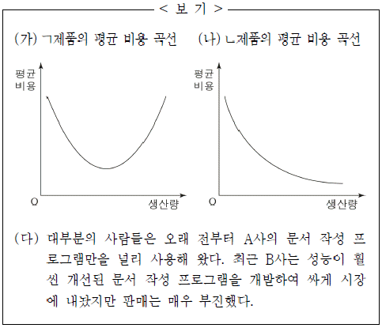
- (가)와 같은 현상이 나타나는 제품의 경우 이윤을 극대화할 수 있는 적절한 선에서 생산 규모를 설정하겠군.
- (나)와 같은 현상이 나타나는 제품의 경우 시장 규모가 허락하는 선까지 생산량을 최대한 늘리겠군.
- (다)에서 사람들이 널리 사용하고 있는 A사의 제품에는 ‘네트워크 외부성’이 나타날 가능성이 크겠군.
- (다)에서 A사의 제품에는 (나)와 같은 현상이 나타나겠군.
- (다)에서 B사 제품의 판매가 부진했던 이유는 (가)와 같은 현상이 나타났기 때문이겠군.
(정답률: 알수없음)
20. ㉠ ~ ㉣에 대한 설명으로 적절하지 않은 것은? [3점](28번 공통지문 문제)
- ㉠행에 제시된 것은 은행 거래 데이터를 처리하기 위한 기준이다.
- ㉠행의 각 항목은 ‘A 은행’의 개별 지점에서 임의로 변경하기 어렵다.
- ㉡행의 거래로 인해 발생한 데이터는 ‘나저축’의 ‘B 은행 데이터베이스’에도 즉시 반영된다.
- ㉡행과 ㉢행의 데이터는 특정 기준을 속성으로 갖는 정형적 데이터이다.
- ㉣행에 기준과 다른 항목을 지닌 데이터가 올 경우 ㉠행의 기준을 즉시 변경하여 데이터를 처리한다.
(정답률: 19%)
21. [A]에 ‘ㄱ씨의 취미는 독서이다.’라는 정보를 추가하고자 한다. 윗글에 비추어 그 방법에 대한 설명으로 가장 적절한 것은?(28번 공통지문 문제)
- 1행의 ‘성별= 남’ 다음에 ‘취미 = 독서’를 기록한다.
- 1행과 2행 사이에 행을 삽입하여 ‘취미 = 독서’를 기록한다.
- 3행 다음에 행을 추가하여 ‘행= 4, 이름= ㄱ씨, 취미 = 독서’를 기록한다.
- 기준에 맞는 데이터 테이블을 구성하여 해당란에 ‘독서’를 기록한다.
- 1행에 ‘독서’라는 속성을 반영할 수 있는 기준이 없으므로 기록 자체가 불가능하다.
(정답률: 알수없음)
22. ㉠ ~ ㉤에 대한 이해로 적절하지 않은 것은?(31번 공통지문 문제)
- ㉠: 과정을 제시하여 손톱에 봉선화 물을 들이는 모습을 구체화하고 있다.
- ㉡: 비유적 표현을 반복하여 붉은 빛이 스며드는 모습을 나타내고 있다.
- ㉢: 미화된 표현을 통해 봉선화 물들이기에 기울인 화자의 정성을 드러내고 있다.
- ㉣: 역동적인 묘사를 통해 봉선화의 속성을 파악하기 어려움을 구체화하고 있다.
- ㉤: 관용적 표현을 사용하여 손톱에 물든 봉선화 물의 붉은 빛을 강조하고 있다.
(정답률: 알수없음)
23. 윗글에 대한 감상으로 적절하지 않은 것은? [3점](31번 공통지문 문제)
- 시적 화자는 세상 사람들과는 달리 봉선화의 ‘향기 없’는 속성을 긍정적으로 평가하고 있군.
- 시적 화자는 ‘녹의홍상 한 여인’이 등장하는 꿈을 통해 봉선화의 낙화를 예감하고 있군.
- 시적 화자는 ‘그대 자취 내 손에 머물렀’음을 근거로 ‘그대는 한스러워 마소’라고 하며 봉선화를 위로하고 있군.
- 시적 화자는 바람을 이기지 못하고 쉽게 떨어지는 ‘동산의 도리화’에서 무상감을 느끼고 이를 슬퍼하고 있군.
- 시적 화자는 ‘규중에 남은 인연 그대 한몸 뿐이로세’라고 말함으로써 봉선화에 대한 각별한 정을 드러내고 있군.
(정답률: 알수없음)
24. 윗글에 대한 설명으로 적절하지 않은 것은?(34번 공통지문 문제)
- 1연은 ‘~ㄹ지어이’를 통해 화자의 기대와 소망을 드러내면서 시상을 열고 있다.
- 2연은 ‘그’의 이미지를 변주하여 1연의 내용을 반복함으로써 의미를 강조하고 있다.
- 3연은 ‘행인’에게 말을 건네는 형식으로 상황에서 비롯된 정서를 자연스럽게 드러내고 있다.
- 4연은 ‘비었거든’과 ‘담을지네’를 호응시켜 화자가 처한 상황을 이겨내고자 하는 태도를 드러내고 있다.
- 5연은 수미상관을 통해 자연과 하나가 된 화자의 모습을 부각하며 시상을 마무리하고 있다.
(정답률: 9%)
25. <보기>의 맥락에서 윗글을 해석한다고 할 때, 시어(구)에 대한 이해로 적절하지 않은 것은?(34번 공통지문 문제)
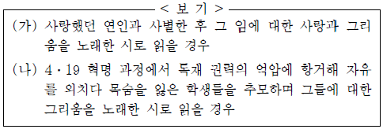
- (가)의 맥락에서 보면, ‘그리운’은 개인적인 경험과 관련된 정서가 표출된 것이겠군.
- (가)의 맥락에서 보면, ‘꽃’은 세상을 떠난 임에게 바치고 싶었던 마음을 상징한 것이겠군.
- (나)의 맥락에서 보면, ‘그의 노래’는 시대적인 요구가 담긴 목소리라고 할 수 있겠군.
- (나)의 맥락에서 보면, ‘울고 간’은 억압적 현실로 인한 희생과 관련된다고 할 수 있겠군.
- (가), (나) 모두의 맥락에서 ‘다시 찾을 수 없어도’는 대상이 부재하는 상황을 드러낸 것으로 볼 수 있겠군.
(정답률: 알수없음)
26. ㉠ ~ ㉤에 대한 이해로 적절하지 않은 것은?(37번 공통지문 문제)
- ㉠: 질문을 통해 상대방에 대한 호기심을 드러내고 있다.
- ㉡: 관용적 표현으로 인물이 느낀 곤혹스러움을 드러내고 있다.
- ㉢: 다른 상황에 빗대어 버스 안의 위축된 분위기를 표현하고 있다.
- ㉣: 과거 행적을 들어 상대방의 언행에 나타난 모순을 지적하고 있다.
- ㉤: 우회적인 표현으로 인물이 느끼고 있는 불안함을 드러내고 있다.
(정답률: 0%)
27. <보기>를 참고하여 윗글을 감상한 내용으로 적절하지 않은 것은? [3점](37번 공통지문 문제)
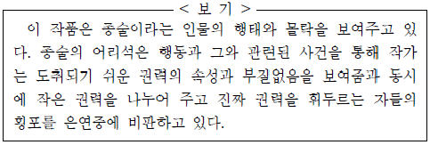
- 종술이 저수지 감시원이 된 상황은 작은 권력을 위임 받은 것에 해당하겠군.
- 종술이 버스에 탄 사람들에게까지 윽박지르는 모습은 권력에 도취된 인물의 심리를 단적으로 보여주는 것이겠군.
- 종술이 최 사장 일행의 행동을 자신에 대한 모독으로 받아들이는 것은 자신의 위치를 파악하지 못하는 어리석음을 보여주는 것이겠군.
- 최 사장이 종술로 하여금 법에 따라 불법 어로 행위를 단속하게 하는 모습은 권력의 부질없음을 보여주는 것이겠군.
- 최 사장이 자신의 낚시질은 합리화하고, 노성을 지르며 종술을 해고하는 모습은 진짜 권력을 가진 자들의 횡포에 해당하겠군.
(정답률: 알수없음)
28. [A]에 대한 이해로 적절한 것은?(37번 공통지문 문제)
- 인물의 내면을 직접적으로 제시하고 있다.
- 반전을 통해 상황이 전환될 것을 암시하고 있다.
- 사건의 분위기를 다른 방향으로 전환시키고 있다.
- 반어적 말하기를 통해 해학적 상황을 연출하고 있다.
- 상징적 소재를 통해 문제 해결의 실마리를 제시하고 있다.
(정답률: 알수없음)
29. 윗글의 내용으로 보아, [A]에 나타난 ‘우치’와 ‘임금’의 주된 협상 전략으로 가장 적절한 것은?(41번 공통지문 문제)
- 우치와 임금은 모두 상대방이 원하는 바를 확인한 후, 그 절충점을 찾아 타협하고자 한다.
- 우치는 자신의 능력을 부각하여, 임금은 자신의 권위를 앞세워 각자 자신이 원하는 바를 상대방이 수용하도록 강요한다.
- 우치와 임금은 상대방의 주장에 문제가 있는 점을 지적하며, 각자 자신이 원하는 바를 상대방이 수용해야 한다고 주장한다.
- 우치는 자신이 원하는 바와 상대방이 원하는 바의 교환을 요구하고, 임금은 수락의 조건으로 상대방의 능력을 확인하고자 한다.
- 우치는 상대방에게 자신이 원하는 바를 들어달라고 공손히 요청하고, 임금은 먼저 자신이 원하는 바를 상대방이 수용하라고 명령한다.
(정답률: 0%)
30. <보기>를 참고하여 윗글을 감상한 내용으로 적절하지 않은 것은? [3점](41번 공통지문 문제)
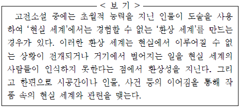
- 우치는 자신의 초월적 능력을 발휘하여 ‘현실 세계’에서 경험할 수 없는 ‘환상 세계’를 만들어냈군.
- ‘환상 세계’에서도 임금이 여전히 조선의 왕으로 설정되어 있다는 점에서 ‘현실 세계’와 관련을 맺고 있군.
- 우치의 도술로 임금이 ‘환상 세계’를 경험한 일을 ‘현실 세계’의 신하들이 인식하지 못한다는 점에서 환상성을 확인할 수 있군.
- ‘환상 세계’의 경험이 임금에게 ‘현실 세계’의 우치를 인정하도록 만드는 실마리가 되고 있다는 점에서 사건의 이어짐을 확인할 수 있군.
- 임금이 ‘환상 세계’에서 우치를 만나 벗이 된 일을 ‘현실 세계’에서 잊어버리고 있다는 점에서 환상성이 강조되고 있다고 볼 수 있군.
(정답률: 8%)
31. <보기>를 참고하여 윗글을 감상한 내용으로 적절하지 않은 것은?(44번 공통지문 문제)
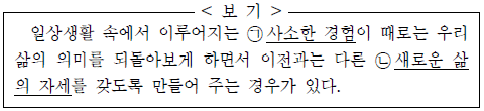
- 계절과 관련된 ㉠을 통해 ‘화려한 초록의 기억’이 사라져 버린 삶의 의미를 되돌아보고 있다.
- ‘갓 볶아낸 커피의 냄새’, ‘잘 익은 개암의 냄새’ 등 후각적인 심상을 통해 ㉠에서 느끼는 즐거움을 드러내고 있다.
- ㉡은 ‘맹렬한 생활의 의욕’을 별안간 느끼게 된 것과 긴밀하게 관련되어 있다.
- ㉡은 ‘전에 없이 손수 목욕물을 긷고, 혼자 불을 지피게 되는 것’으로 구체화되고 있다.
- ㉡은 ‘태곳적 원시’의 세계로 되돌아가고 싶은 원초적 욕망에
(정답률: 알수없음)